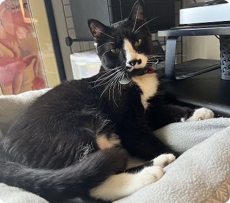
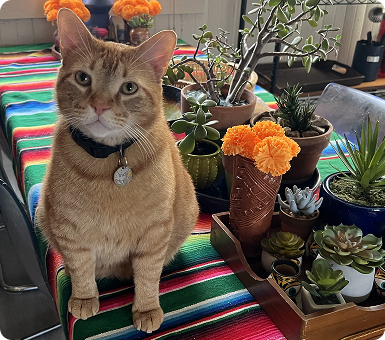
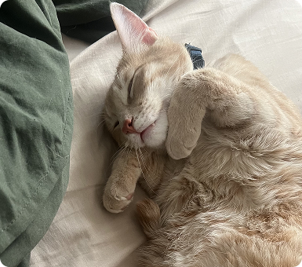
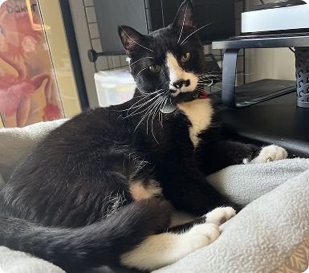
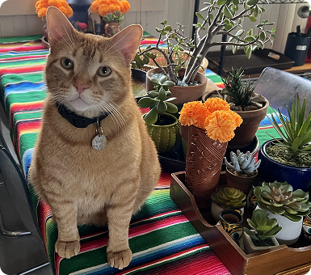
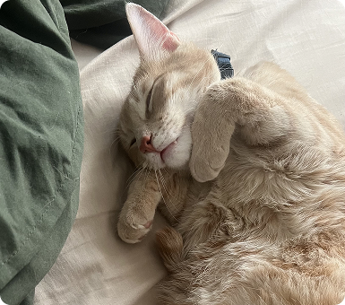

About Me
Hi, I'm Kat, a lifelong creative (and art nouveau fan) with a love for crafting experiences people enjoy. My favorite place to be is at the intersection of art and technology, applying creative thinking to all kinds of practical applications.
My design philosophy
As a UX designer, I am trusted to advocate for people in everything I do. Respect and awareness for humanity at the center of technological development is a core value of mine. Products should serve the user, not the other way around.
Design doesn't exist in isolation. I work best when collaborating closely with stakeholders to find solutions that balance user needs with technical constraints and business goals. The best outcomes happen when everyone's expertise contributes to the final product.
I also believe in building systems, not just solving individual problems. Good design compounds over time when it's made to grow and adapt.
The best design is always invisible. To me, the true sign of success is when the final product is so seamless no one even notices how much effort went into it. When technology fades into the background and simply works, that's when I know the design has done its job.
How I got started
We got our first family computer and an internet connection around the time I started high school, back in the halcyon days of web 1.0. I quickly became inspired by the beautifully designed and unique personal webpages made by people who shared a lot of my interests and hobbies. It wasn't long until I had a Geocities account, a basic knowledge of HTML and CSS, and a totally not legally dubious copy of image editing software.
Several years and one associate's degree later, I was coding websites and creating interactive Flash multimedia for local businesses as a full-time job.
My university years
In 2010 I decided to pursue another interest of mine: animation. I studied with a former Disney director and got to storyboard on our class's senior short film. I learned how to work in different mediums (2D, 3D, stop motion, motion graphics) and everything from life drawing to film editing to compositing to sound design to photography and lighting.
I really enjoyed my time at university and finished a 4-year degree with quite a diverse set of skills under my belt. However, it didn't take long before I realized pursuing a career in the entertainment industry wasn't for me.
My career so far
After graduation I spent some time getting reacquainted with the design world, taking on everything from e-commerce marketing to vinyl vehicle wraps to animating characters for an indie game.
In 2017 I took on a digital marketing design position at a Fortune 500 company. This gradually evolved into an official UI-focused role where, for a time, I was the only designer making improvements to the website and app. When the company restructured in 2020 I became part of a fully-fledged UX team working within a larger digital product development team.
Future goals
In the summer of 2025 my most recent role was the casualty of a mass layoff. While I loved my job and the amazing team I had the pleasure of working with, I choose to see this sudden shift in my trajectory as the catalyst for growth. It's a little scary, but also exciting and full of potential.
I'm currently looking for a new creative and strategic challenge. I am open for full time or contract work. If it sounds like we'd be a good fit, I'd love to chat with you!
I Love Working On:
Design System Development
I love building scalable, well-documented design systems that make designers' and developers' lives easier.
Motion & Interaction Design
I have a degree in animation; give me a chance to flex that particular skillset and you won't be disappointed.
Instructional Content
I enjoy taking an information-dense topic and making it easier to understand in an engaging, digestible format. Bonus points if I'm allowed to make it fun.
Interests & Hobbies
Learning Bass Guitar
I've been playing for about a year so I'm a beginner, but I've never been able to play an instrument before. Music is also a great way to train the left and right sides of the brain to work together (definitely an advantage for creatives in tech).
Road Cycling
My preferred method of forcing myself to get some exercise. It's also nice to explore new places, listen to music, and get some fresh air.
Block Printing
This involves hand-carving designs into linoleum and using it to print on a surface, usually fabric or paper. It's a meditative art form that produces beautifully unique results.
Sculpture & Miniatures
I like getting creative with tactile materials after pushing pixels all day. I've made figurines, dioramas, and custom props for costumes.
Journaling
I keep multiple journals for different purposes: creative ideas, daily reflections, and goal tracking. It helps me process thoughts and stay organized.
Sewing
I find sewing to be a really satisfying and useful hobby! I'm sure I've learned more about geometry through trying to figure out how patterns work than I ever did in high school AP math.
Cat Pictures
Before you go, here's some photos of the silly creatures that live in my house.
 




